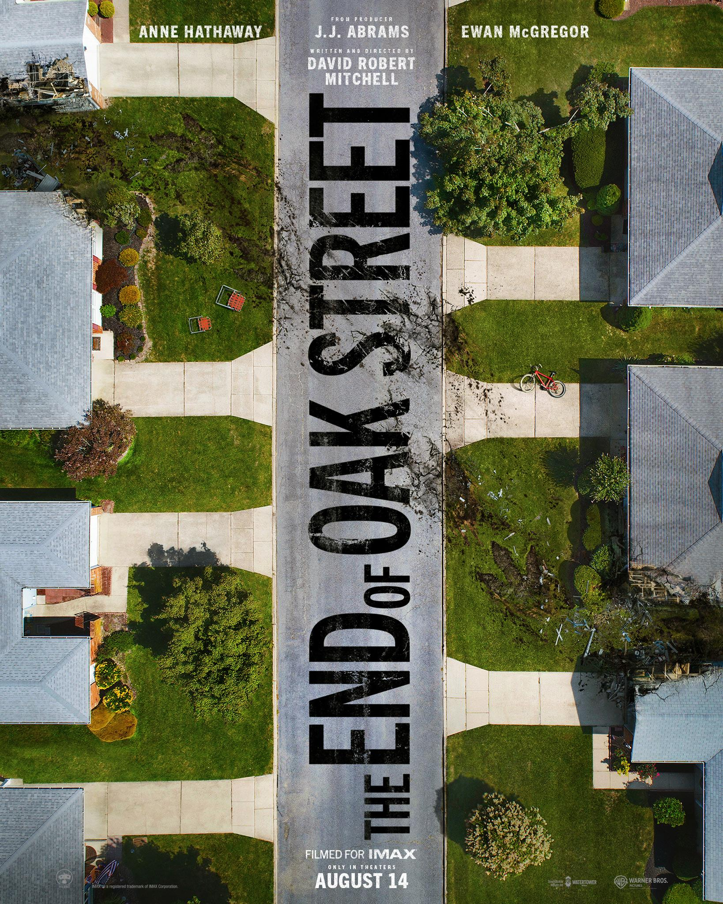
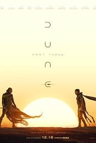
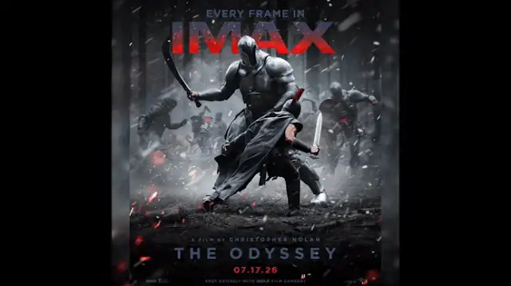

Estreno de Spiderman Brand New Day
Peter Parker, ahora un adulto, vive completamente solo y se ha borrado voluntariamente de los recuerdos de sus seres queridos.
Todo del Mundo del Entretenimiento Cinematografico y Series

Peter Parker, ahora un adulto, vive completamente solo y se ha borrado voluntariamente de los recuerdos de sus seres queridos.

continúa la sangrienta guerra civil conocida como la Danza de los Dragones. La familia Targaryen está completamente fracturada tras la muerte de Lucerys Velaryon, dividiendo a Poniente entre los Negros (partidarios de Rhaenyra) y los Verdes (partidarios de Aemond).

Después de que un misterioso fenómeno cósmico arranque la calle Oak de su entorno suburbano, todo el vecindario es transportado a un lugar totalmente desconocido.

La épica conclusión de la trilogía de ciencia ficción dirigida por Denis Villeneuve.
La nueva precuela que expande el universo de la franquicia.
El esperado regreso de los héroes de Marvel a una gran amenaza existencial.
